Strudel aux pommes amandes et cannelle

Je vous présente aujourd’hui une délicieuse recette, il s’agit du strudel aux pommes, amandes, cannelle et légèrement citronné.
Ingrédients
- Feuilles de pâte filo - 4
- Chapelure - 50g
- Sucre - 95g
- Cannelle en poudre - 1,5 càc
- Beurre doux - 100g
- Pommes Granny Smith - 3 pommes (400g épluchées et épépinées)
- Sucre - 75g
- Beurre doux - 40g
- Amandes effilées - 50g
- Jus de citron - 15ml
- Zeste de citron - 1 càc
- Extrait de vanille - 1 càc
- Maizena - 1/2 càs
Instructions
- Couper les pommes en petits dés
- Faire fondre le beurre dans une poêle puis y ajouter les pommes et le sucre
- Laisser cuire quelques minutes puis ajouter le zeste de citron, les amandes effilées et l'extrait de vanille
- Dans un bol mélanger la maïzena et le jus de citron
- Une fois que vos pommes ont légèrement dorées (très légèrement) y ajouter le mélange citron-maizena
- Cuire 5 minutes tout en mélangeant puis laisser refroidir
- Mélanger le sucre, la cannelle et la chapelure dans un bol
- Faire fondre le beurre
- Préchauffer à ce moment là le four à 200°
- Recouvrir une plaque de cuisson de papier sulfurisé
- Étaler la première feuille de pâte filo et la badigeonner de beurre
- Saupoudrer la feuille du mélange sucre-cannelle-chapelure
- Faire de même avec toutes les feuilles de pâte filo
- Étaler la garniture aux pommes refroidie sur la longueur de la feuille
- Rouler les feuilles de pâte filo de manière en enfermer la garniture
- Badigeonner le rouleau de beurre et le saupoudrer avec le mélange chapelure-sucre-cannelle restant
- Enfourner pour 20 minutes tout en surveillant régulièrement
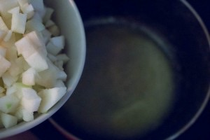
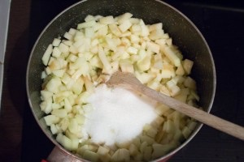
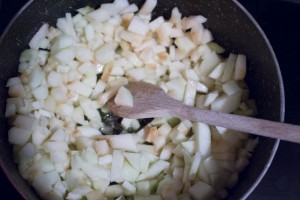
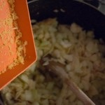
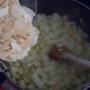
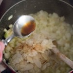
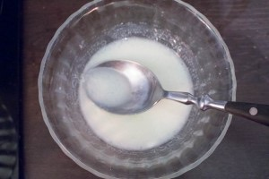
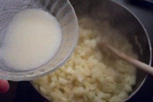
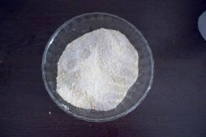
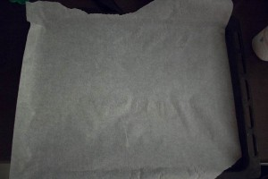
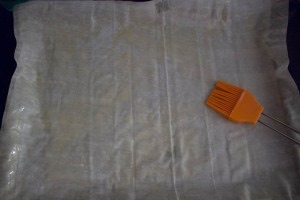
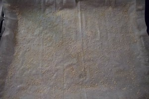
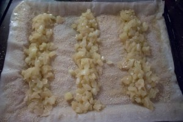
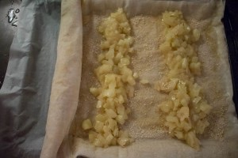
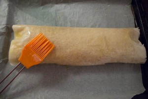
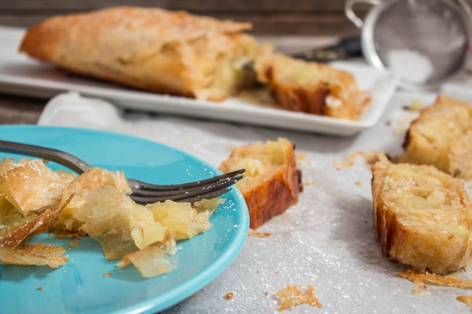
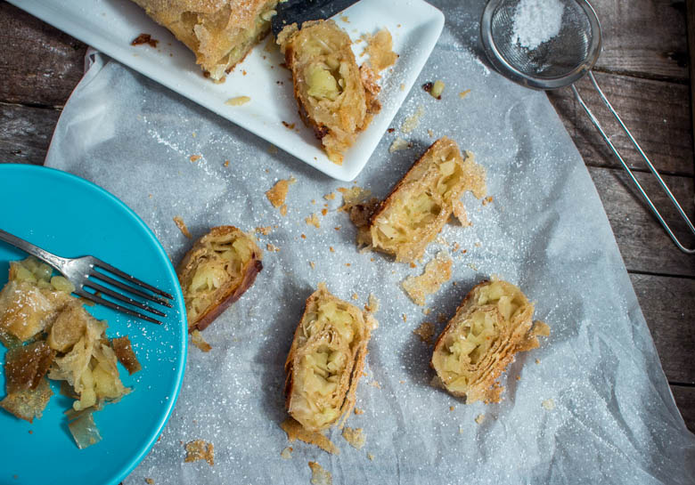
Les tips de la communauté
49 commentaires
Très enthousiaste accueil pour ce strudel classique. Les lecteurs apprécient l'association pommes-cannelle. Quelques testations réussies mentionnées. Considéré comme un succès culinaire avec une présentation magnifique.
Astuces
- L'association pommes-cannelle est un classique efficace
- Recette pouvant être préparée d'avance pour occasion spéciale
- L'importance de la crème fraîche dans la saveur finale
Variantes suggérées
- Possibilité d'ajouter du cidre pour une note normande
- Adaptation possible avec les saveurs régionales